sector83 supernovae (34 total)
Each figure has three panels. The top panel shows the transient light curve, the middle panel shows the local background (estimated in an annulus), and the bottom panel shows a "background-model corrected" light curve. Details about the background model are in the README.
The vertical red line marks the time of discovery reported to TNS. Other useful metadata from TNS is in the figure title.
Note that the top and bottom panel are in magnitudes, while the middle panel is in differential flux units. The magnitudes are calibrated to the flux in the reference image used for image subtraction. Thus, flux from the host galaxy is included in these magnitudes.
3-sigma upper limits are plotted as triangles with no errorbars. A typical limiting magnitude is 19.6 in 30 minutes or 18.4 in 200 seconds (for low backgrounds).
The links allow you to download the light curve data as a text file.
More details in the README.
2024vey
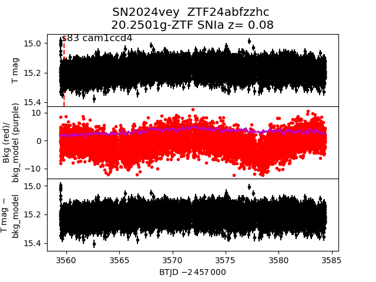
2024ypm
 2024uzy
2024uzy
 2024xqf
2024xqf
 2024wwx
2024wwx
 2024wxu
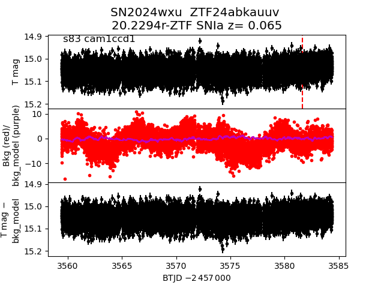
2024xmg
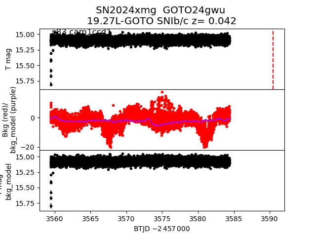
2024zcm
2024wxu
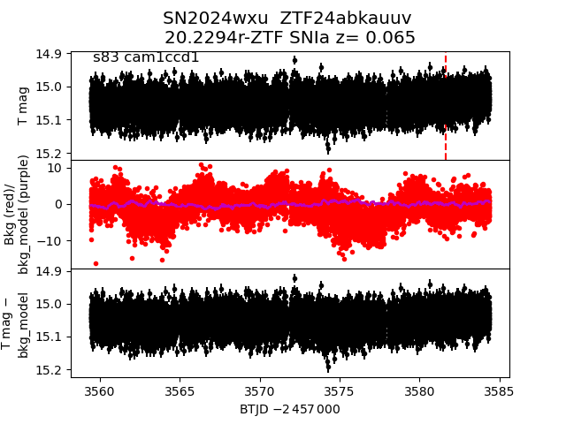
2024xmg
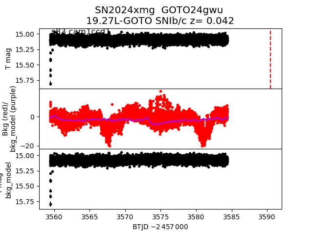
2024zcm
 2024xhi
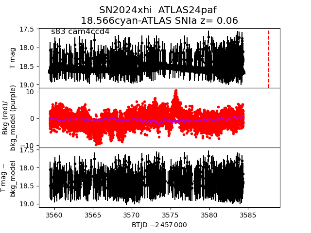
2024ycw
2024xhi
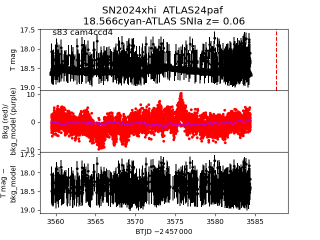
2024ycw
 2024ypt
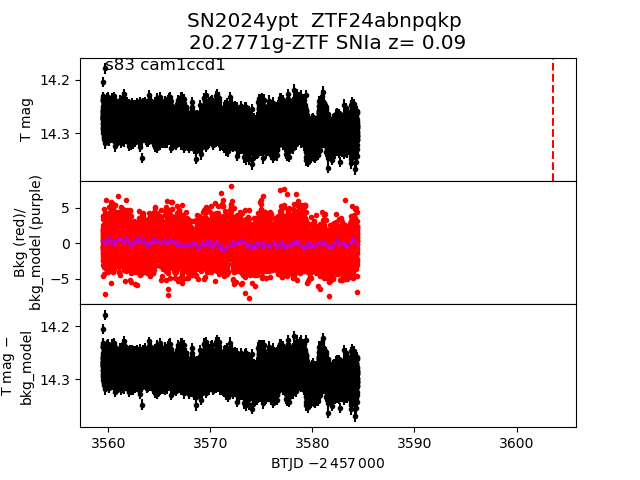
2024xhl
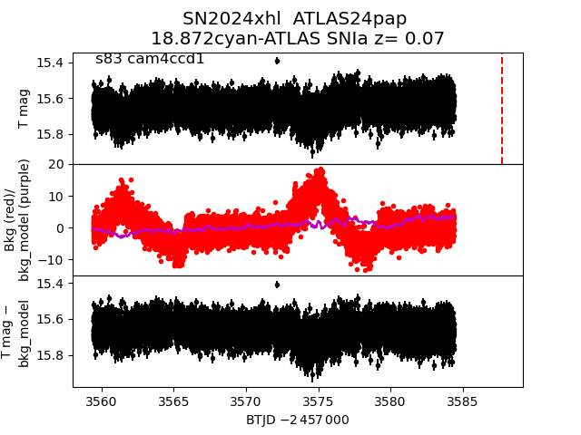
2024vyg
2024ypt
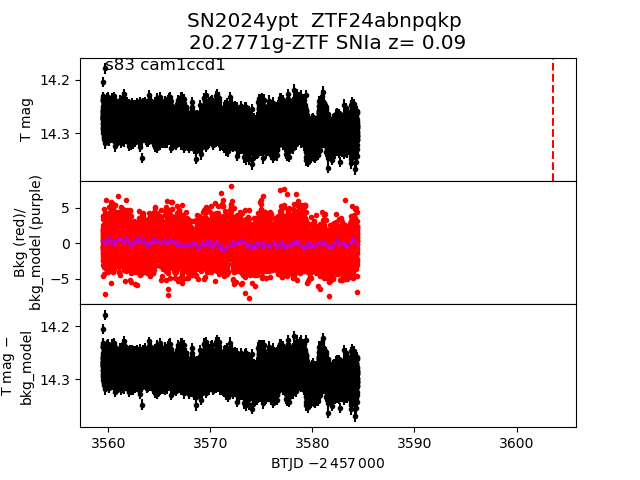
2024xhl
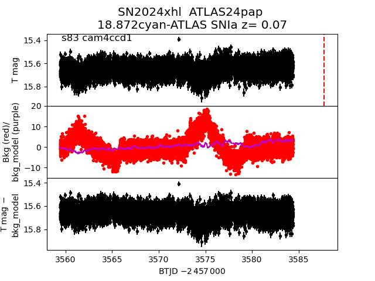
2024vyg
 2024aalo
2024aalo
 2024wtu
2024wtu
 2024yyu
2024yyu
 2024wtc
2024wtc
 2024yzy
2024yzy
 2024vvd
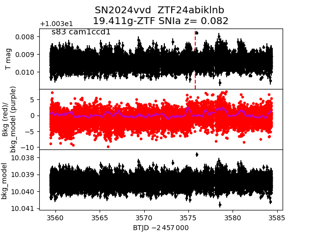
2024ywe
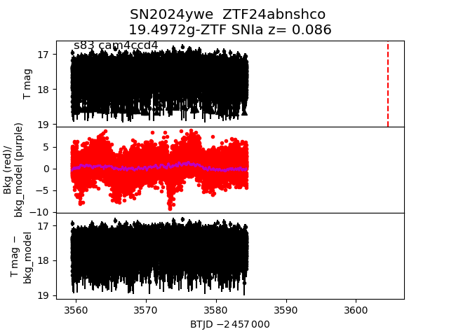
2024yey
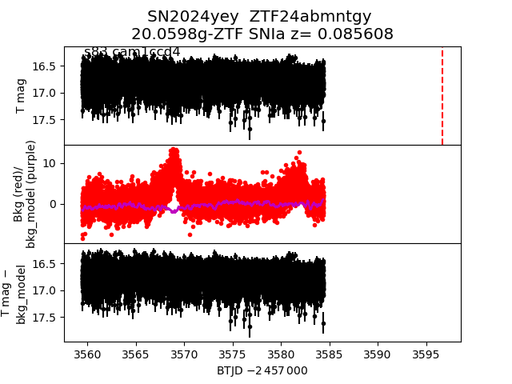
2024vkj
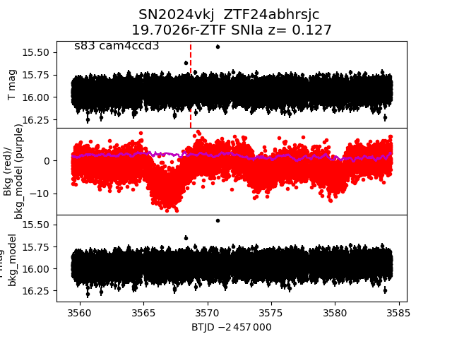
2024vuu
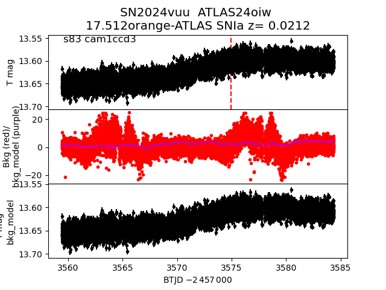
2024vpd
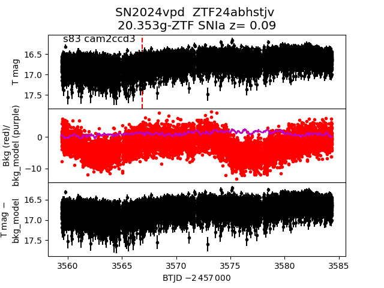
2024xkz
2024vvd
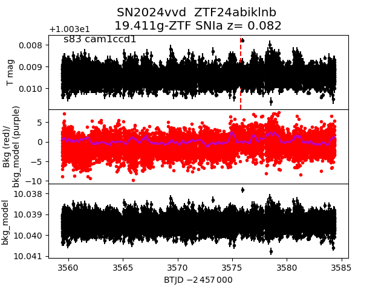
2024ywe
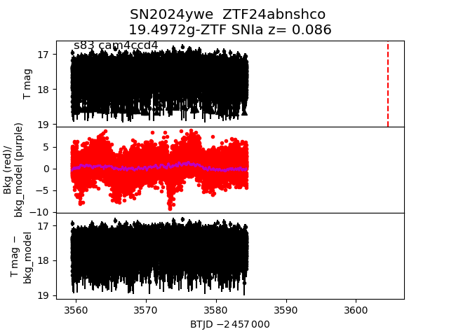
2024yey
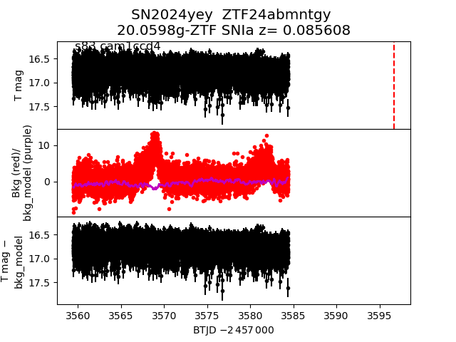
2024vkj
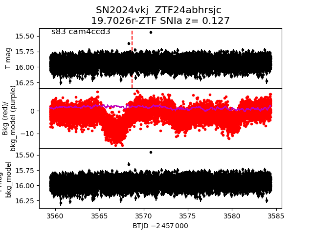
2024vuu
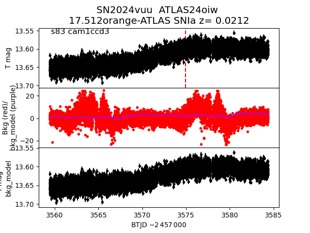
2024vpd
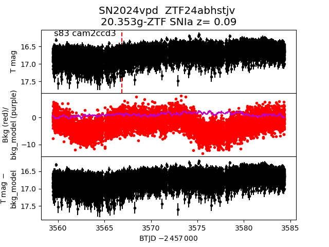
2024xkz
 2024xhg
2024xhg
 2024xmu
2024xmu
 2024ywj
2024ywj
 2024vbm
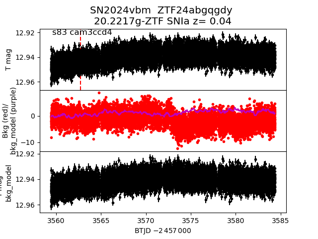
2024ucd
2024vbm
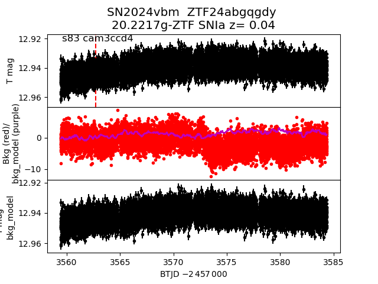
2024ucd
 2024ymr
2024ymr
 2024vyf
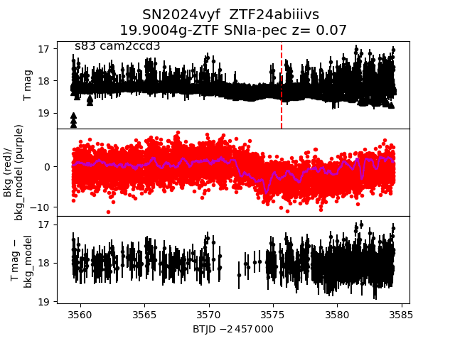
2024xvd
2024vyf
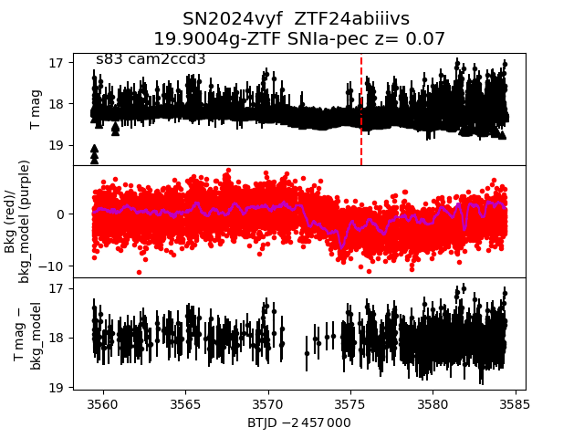
2024xvd
 2024yzz
2024yzz